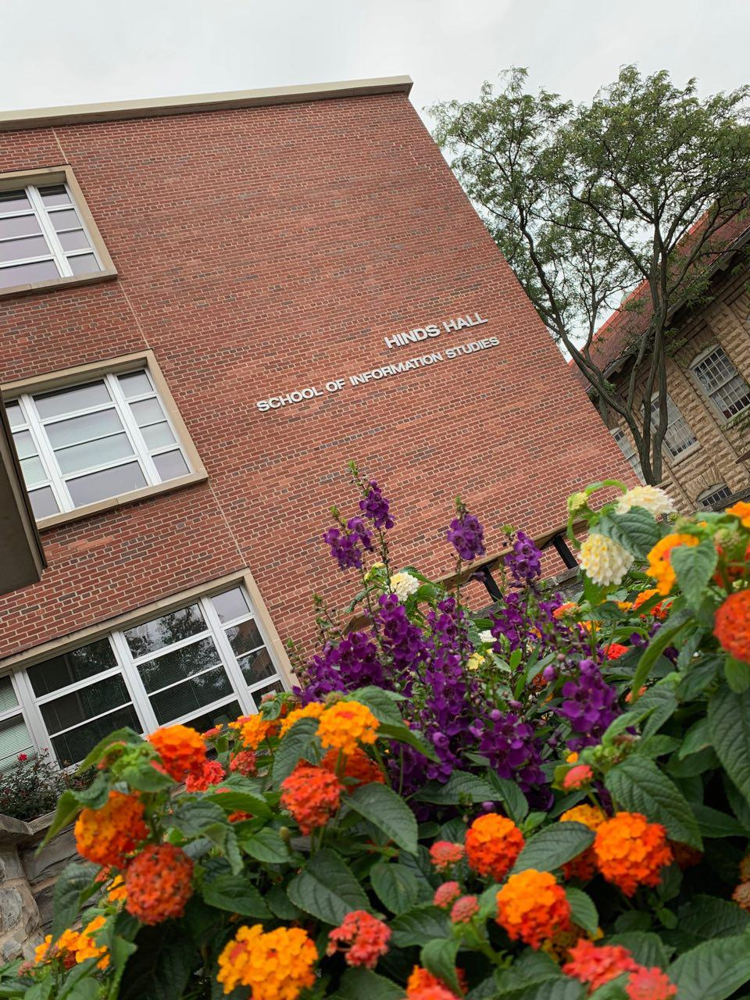
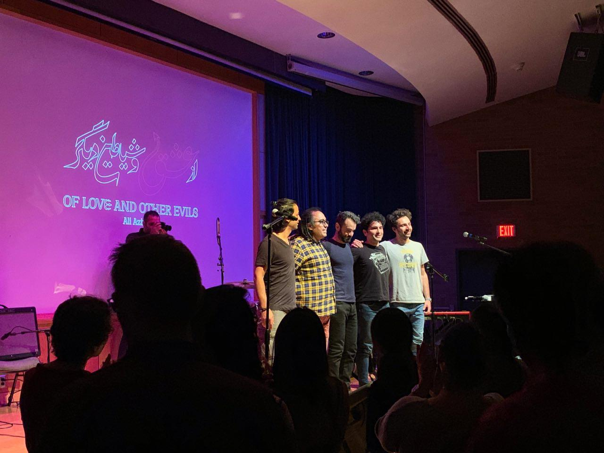

What does my senior year look like?
First lets look at the nice picture I took of my home college building:
I made a mistake of taking 18 credits in this semester, and now I feel overwhelmed. I should have put less pressure on myself and took less credits. However, I wanted to be able to graduate on May 2020.
In all of the weekends I always go to schools library to work on my homworks right after my work.
I am always on campus during the weekends evenings until late night, close to midnight, finishing up homeworks.
Me working on homeworks on weekends:
As much as I love my major, taking four class in Information Management and Technology is really challenging. I am trying my best to be great in all of my classes.
This is semester I took these classes:
In addition to all of my classes and my part time job, I have been attending to different events across the campuse.
Syracuse Universty Fall 2019 involvement fair:
In this fair I got to know different organizations that are exist all across the campus. I shared my email address to some of them so I get involved with their activities.

The organizations that I joined so far are:
- ISA
- TSA
- MSA
To add to my activities on campus, I just attend to Ali Azimi's concert. He is a singer that has his own way of playing music. He came to Syracuse University to play for us in his New York Tour.
